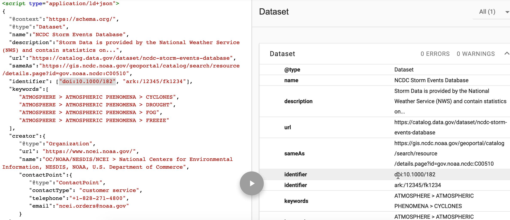
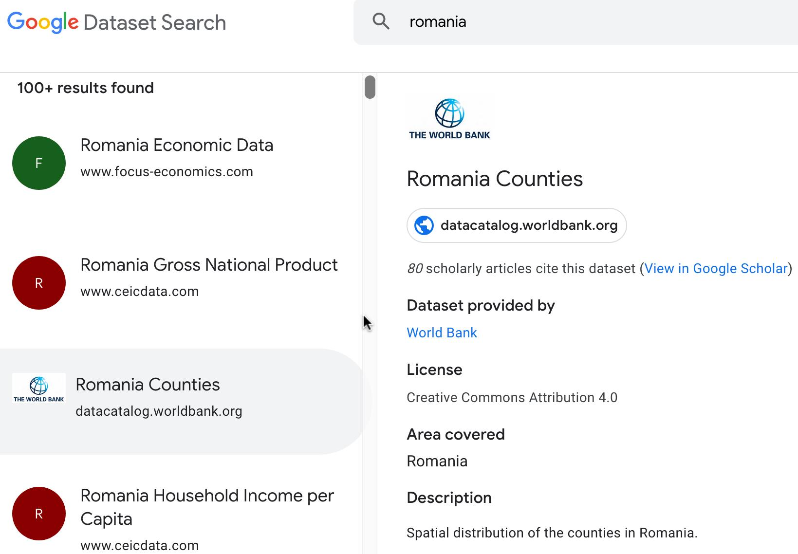
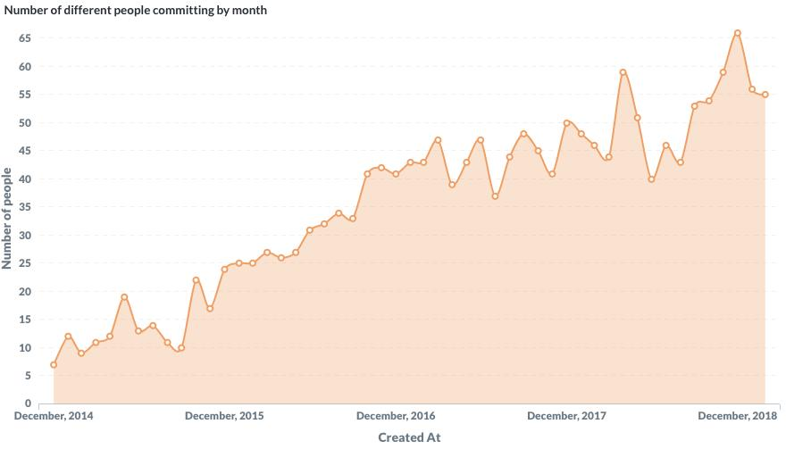
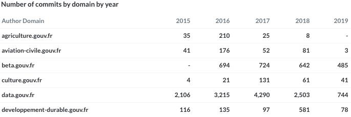
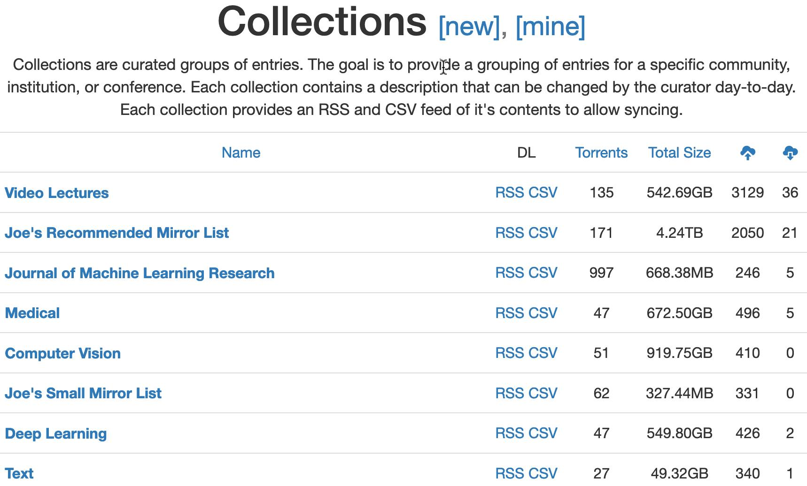

Data publicării: 20.03.2019
Autor articol: Sabin Buraga
Preambul
În peisajul extrem de dinamic al Web-ului actual, depozitar al unui volum tot mai mare de date – “tonnabytes” conform Kirk Borne (2012) –, ne confruntăm cu dificultăți majore în ceea ce privește regăsirea unor (categorii de) resurse specifice, utile proiectanților și/sau dezvoltatorilor – fie ei novici, intermediari ori experți – axați pe diverse arii ale informaticii.
Articolul de față ilustrează succint câteva soluții (motoare) de căutare specializate în contextul regăsirii resurselor Web (Buraga, 2018). Ne vom axa asupra instrumentelor de căutare a seturilor de date publice, disponibile deschis. Suplimentar, vom discuta succint maniera de adnotare a acestor cataloage de date pe baza tehnologiilor actuale aliniate Web-ului semantic.
Căutarea seturilor de date
În plină “epocă” – a se considera problematici și domenii precum big data, învățare automată (machine learning), procesarea digitală a conținutului multimedia, realizarea automată de inferențe, studierea comportamentului uman, vizualizarea informațiilor, deep understanding etc. – a procesării sofisticate a datelor reunite sub denumirea generică de mulțimi de date (datasets), apare necesitatea regăsirii unor astfel de date specifice.
Un set de date poate fi reprezentat de un fișier CSV (Comma Separated Values) sau o colecție organizată de tabele sau de fișiere disponibile în diverse formate (de dorit standardizate și deschise), fiind însoțite de meta-date aferente, inclusiv informații referitoare la proveniență și/sau parametri folosiți pentru antrenarea unor componente software de prelucrare a acestor date.
Google Dataset Search
Prima soluție este aceea de a folosi un motor Web specializat precum Google Dataset Search – http://toolbox.google.com/datasetsearch – lansat în septembrie 2018.
Pentru ca datele să fie indexate de acest instrument, ele trebuie adnotate pe baza construcțiilor stipulate de popularul vocabular schema.org, în speță entități din clasa Dataset. Sintactic, aceste adnotări pot fi exprimate via RDFa sau JSON-LD, o extensie a formatului JSON (JavaScript Object Notation) specifică problematicilor Web-ului semantic (Web of data). Alternativ, se poate recurge la vocabularul DCAT (Data Catalog Vocabulary) – recomandare a Consorțiului Web (2014).
Un exemplu este ilustrat de figura următoare, în care se poate observa cum au fost extrase – pe baza instrumentului Web Structured Data Testing Tool pus la dispoziție de Google – cunoștințe de interes privitoare la un set de date referitor la evenimente meteorologice.

Un catalog (colecție) a mai multor seturi de date poate fi descris pe baza conceptului DataCatalog – pentru detalii, a se consulta http://schema.org/DataCatalog –, iar informațiile referitoare la posibilitatea accesării efective a datelor sunt exprimate via DataDownload – http://schema.org/DataDownload – care reprezintă o sub-clasă a clasei MediaObject.
O captură-ecran cu rezultatele obținute în urma căutării bazate pe un termen de interes este disponibilă mai jos. Se observă, de asemenea, și indicarea articolelor – disponibile via Google Scholar – citând/folosind un anumit set de date, plus specificarea licenței de utilizare.

Github Archive
Github Archive reprezintă un spațiu de arhivare și accesare a depozitelor publice ale proiectelor software găzduite de popularul sistem Github. Aceste informații sunt, cu precădere, folositoare studierii comportamentelor dezvoltatorilor de aplicații sau a dinamicii proiectelor software de anvergură – diverse cercetări efectuate sunt descrise în lucrări de specialitate precum (Coman, Cîtea & Buraga, 2016), (Casalnuovo, Ray & Rubio-González, 2017), (Munaiah et al., 2017) și (Markovtsev & Long, 2018). Evident, contextul mai larg privește ingineria software.
Evenimentele declanșate de acțiuni – create, download, fork, milestone, push, watch etc. – asupra depozitelor de cod sunt stocate în format JSON, arhivele gzip putând fi accesate via cereri HTTP clasice – de pildă, folosind cURL.
Pentru analize mai complicate, se poate recurge la BigQuery oferit de Google, permițându-se astfel efectuarea de interogări SQL asupra (meta-)datelor despre artefactele proiectelor disponibile public.
Ca exemplificare, menționăm un studiu de caz recent privitor la contribuțiile (i.e. acțiunile de tip commit) asupra depozitelor de cod aferente aplicațiilor guvernamentale franțuzești (Augusti, 2019). Astfel, au fost preluate și procesate arhivele activităților desfășurate între 1 ianuarie 2015 și 31 martie 2019 (un miliard jumătate de evenimente înregistrate), selectându-se doar evenimentele de tip push realizate de persoane afiliate domeniului *.gouv.fr. Procesările s-au efectuat în Python, iar vizualizările rezultatelor obținute au fost generate cu instrumentul Metabase.
În diagrama următoare prezentăm una dintre multele prelucrări statistice realizate. Această figură ilustrează numărul persoanelor distincte care au realizat lunar activități de tip commit asupra codului-sursă disponibil sub licență deschisă.

Tabelul de mai jos indică numărul de commit-uri anuale per domeniu guvernamental – s-a considerat un fragment în care apar menționate doar sectoarele agricultură, aviație civilă, cultură, date publice și dezvoltare durabilă. Cele mai multe contribuții sunt cele axate asupra publicării seturilor de date deschise (data.gouv.fr).

Alte soluții
Ca alternative, se pot utiliza posibilitățile de căutare oferite de siturile Web dedicate publicării datelor deschise sau cele specifice unor companii IT. Le indicăm pe următoarele:
- Academic Torrents – folosind abordarea peer-to-peer, se oferă acces la arhive (seturi și colecții) de date publice de dimensiuni semnificative – vezi figura de mai jos.
- Awesome Public Datasets – are drept scop organizarea pe subiecte de interes (agricultură, biologie, educație, energie, medicină și multe altele) a seturilor de date valide.
- Common Crawl – o inițiativă de a menține un depozit deschis de date – în formă brută, textuală și având atașate meta-date – rezultate în urma preluării și indexării paginilor Web (Lester, 2013). Datele efective sunt stocate în “nori” pe baza Amazon S3, iar cea mai recentă statistică a documentelor procesate este descrisă de Nagel, 2019.
- Kaggle Datasets – expune o listă cuprinzătoare de seturi de date (peste 16 de mii) ce pot fi utilizate cu precădere de specialiștii interesați de știința prelucrării volumelor mari de date. Acestea pot fi publicate/obținute în formate deschise precum CSV, JSON, SQLite, BigQuery (specific Google) sau sub formă de arhive. De asemenea, este pus la dispoziție și un conector pentru a exporta datele oferite de Kaggle direct în instrumentul de analiză Google Data Studio.

De asemenea, pot fi considerate seturile de date oferite pe baza platformelor cloud ale unor corporații
- Google BigQuery public datasets – disponibile via un API REST sau pe baza unor biblioteci concepute în C#, Java și Python.
- Microsoft Azure public datasets – se oferă inclusiv date de natură guvernamentală sau vizând Web-ul cetățenesc, interogabile cu SQL.
- Registry of Open Data on AWS – pune la dispoziție diverse seturi de date, mai ales destinate procesărilor cu caracter științific.
Referințe bibliografice
- Augusti, A, “Analysing commits on GitHub by @.gouv.fr authors”, 2019: http://blog.antoine-augusti.fr/2019/04/analysing-commits-on-github-by-gouv-fr-authors/
- Buraga, S., “(Re)găsirea resurselor Web. De la motoare de căutare și SEO la date structurate”, Facultatea de Informatică, UAIC, 2018: http://profs.info.uaic.ro/~busaco/teach/courses/cliw/web-film.html#week3
- Casalnuovo, C., Ray, B., Rubio-González, C., “GitcProc: A Tool for Processing and Classifying GitHub Commits”, Proceedings of the 26th ACM SIGSOFT International Symposium on Software Testing and Analysis, ACM, 2017.
- Coman, A., Cîtea, A., Buraga, S., “Towards Open Source/Data in the Context of Higher Education: Pragmatic Case Studies Deployed in Romania”, 12th IFIP International Conference on Open Source Systems (OSS), IFIPAICT Volume 472, Springer, 2016.
- Lester, D. “Introduction to Common Crawl”, Common Crawl, 2013: http://commoncrawl.org/the-data/tutorials/
- Markovtsev, V., Long, W., “Public Git Archive: a Big Code dataset for all”, ACM/IEEE 15th International Conference on Mining Software Repositories, ACM, 2018.
- Munaiah, N. et al., “Curating GitHub for engineered software projects”, Empirical Software Engineering, Volume 22, Issue 6, Springer, 2017.
- Nagel, S. “Host- and Domain-Level Web Graphs Feb/Mar/Apr 2019”, Common Crawl, 2019: http://commoncrawl.org/2019/05/host-and-domain-level-web-graphs-febmarapr-2019/
- * * *, Awesome Public Datasets, 2019: http://github.com/awesomedata/awesome-public-datasets#readme
- * * *, BigQuery Public Datasets, 2019: http://cloud.google.com/bigquery/public-data/
- * * *, Common Crawl, 2019: http://commoncrawl.org/
- * * *, Github Archive, 2019: http://www.gharchive.org/
- * * *, Google Dataset Search, 2019: http://toolbox.google.com/datasetsearch
- * * *, Google Search Reference Documentation, 2019: http://developers.google.com/search/reference/overview
- * * *, Kaggle Datasets, 2019: http://www.kaggle.com/datasets
- * * *, Schema.org, 2019: http://schema.org/docs/schemas.html
- * * *, Metabase Documentation, 2019: http://metabase.com/docs/latest/
- * * *, Microsoft Azure: Public data sets for testing and prototyping, 2019: http://docs.microsoft.com/en-us/azure/sql-database/sql-database-public-data-sets
- * * *, Registry of Open Data on AWS, 2019: http://registry.opendata.aws/